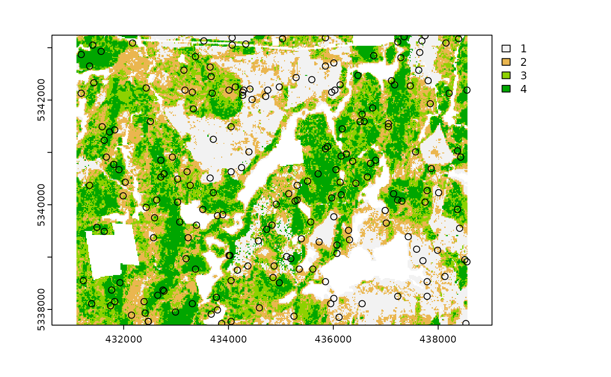
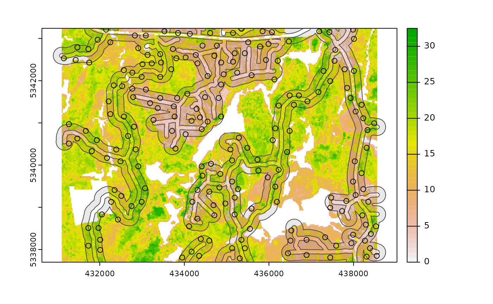
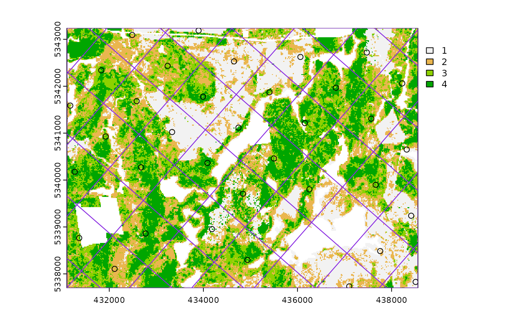
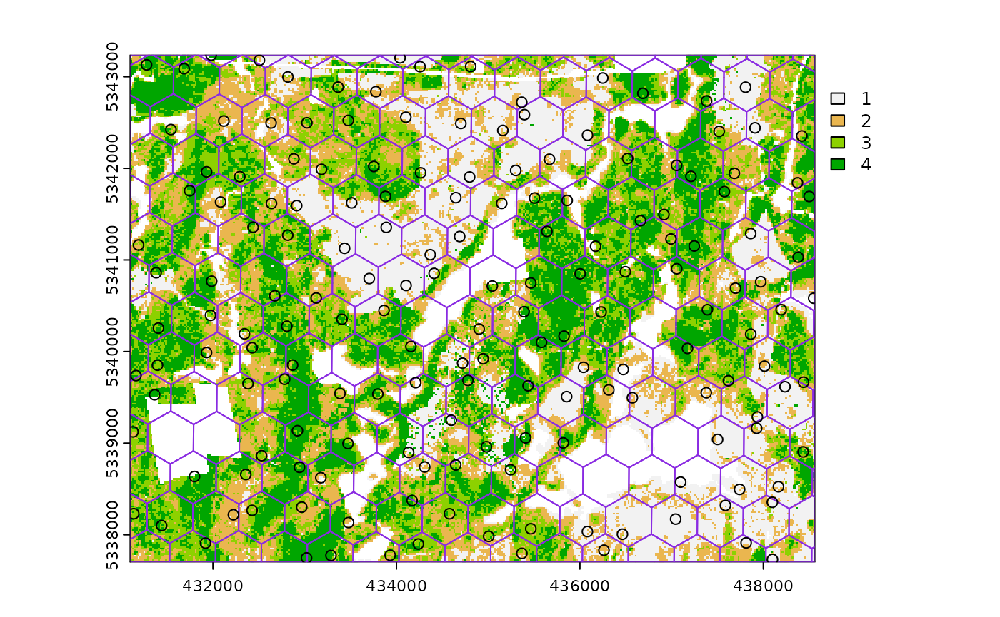
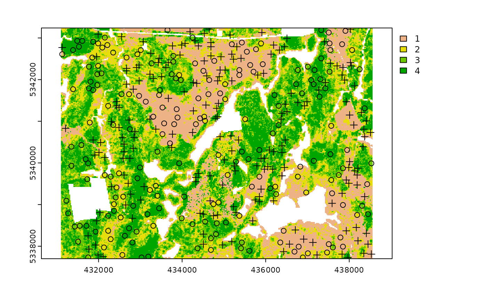
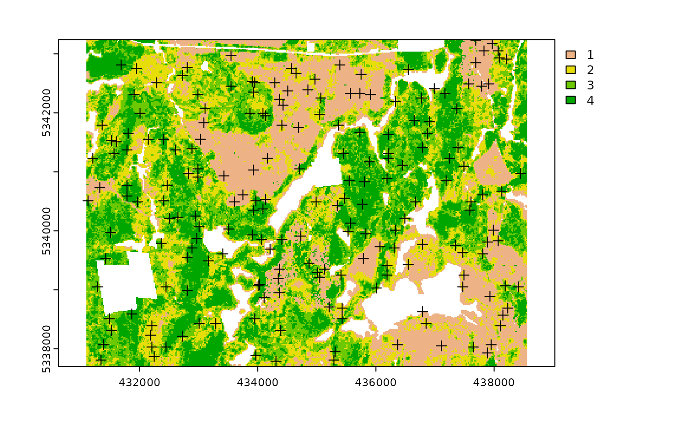
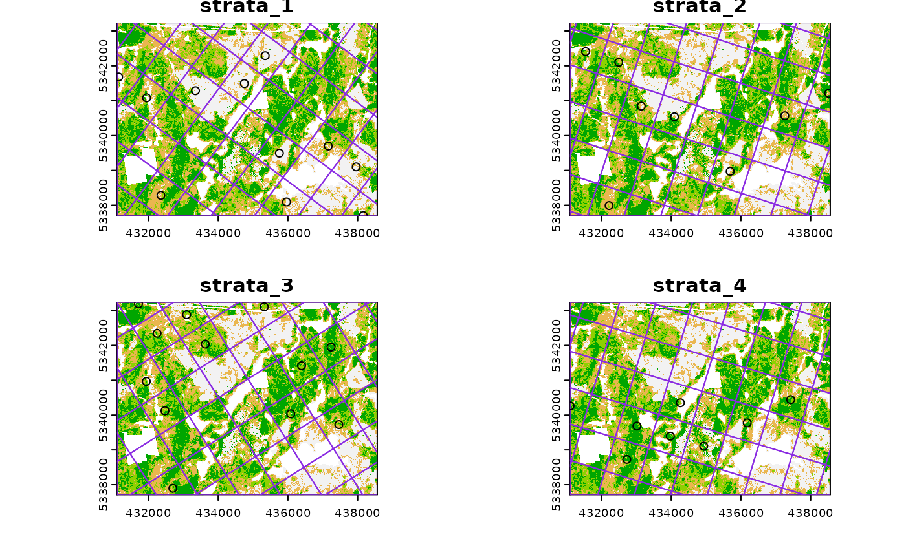
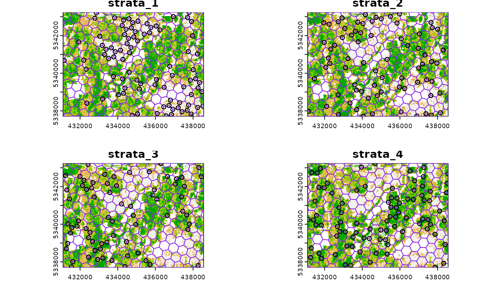
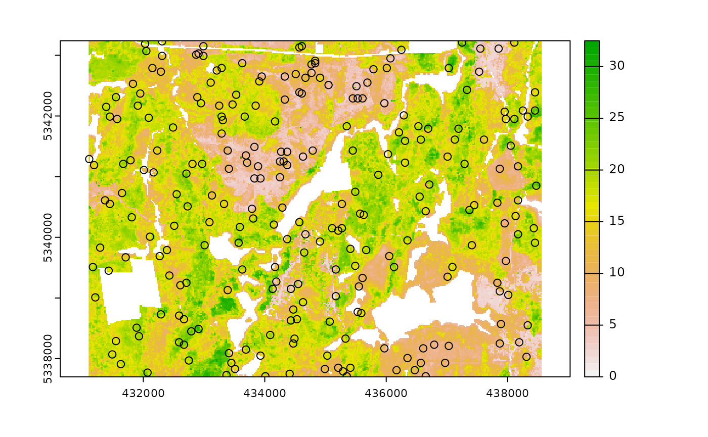
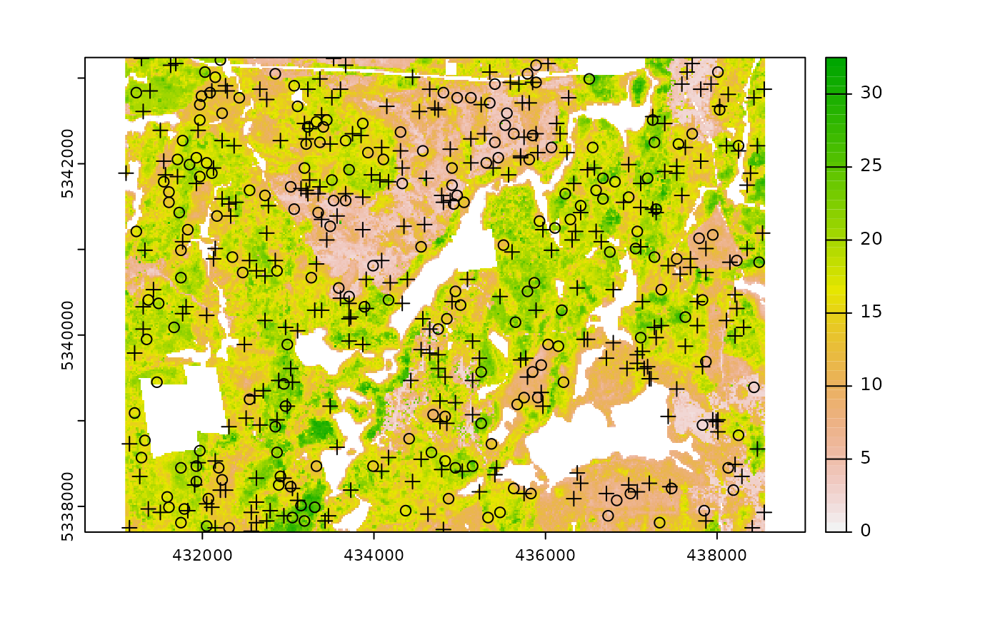

Currently, there are 6 functions associated with the sample verb in the sgsR package:
sample_srs()- simple random samplingsample_systematic()- systematic sampling in a grid or hexagon tessellationsample_strat()- stratified sampling within asrastersample_clhs()- Latin hypercube samplingsample_ahels()- adapted hypercube evaluation of a legacy sample (ahels)
Access
One key feature of using some sample_* functions is its ability to define access corridors. Users can supply a road access network (must be sf line objects) and define buffers around access where samples should be excluded and included.
Relevant and applicable parameters when access is defined are:
buff_inner- Can be left asNULL(default). Inner buffer parameter that defines the distance fromaccesswhere samples cannot be taken (i.e. if you don’t want samples within 50 m of youraccesslayer setbuff_inner = 50).buff_outer- Outer buffer parameter that defines the maximum distance that the samples can be located fromaccess(i.e. if you don’t want samples more than 200 meters from youraccesslayer setbuff_inner = 200).
sample_srs
We have demonstrated a simple example of using the sample_srs() function in vignette("sgsR"). We will demonstrate additional examples below.
The input required for sample_srs() is a raster. This means that sraster and mraster are supported for this function.
#--- perform simple random sampling ---#
sample_srs(raster = sraster, # input sraster
nSamp = 200, # number of desired samples
plot = TRUE) # plot
#> Simple feature collection with 200 features and 0 fields
#> Geometry type: POINT
#> Dimension: XY
#> Bounding box: xmin: 431130 ymin: 5337750 xmax: 438490 ymax: 5343210
#> CRS: +proj=utm +zone=17 +ellps=GRS80 +towgs84=0,0,0,0,0,0,0 +units=m +no_defs
#> First 10 features:
#> geometry
#> 1 POINT (434390 5341010)
#> 2 POINT (434390 5341010)
#> 3 POINT (434970 5342390)
#> 4 POINT (438070 5338390)
#> 5 POINT (438490 5338290)
#> 6 POINT (435970 5342970)
#> 7 POINT (438330 5339050)
#> 8 POINT (434730 5341210)
#> 9 POINT (435830 5340470)
#> 10 POINT (431350 5340530)
sample_srs(raster = mraster, # input mraster
nSamp = 200, # number of desired samples
access = access, # define access road network
mindist = 200, # minimum distance samples must be apart from one another
buff_inner = 50, # inner buffer - no samples within this distance from road
buff_outer = 200, # outer buffer - no samples further than this distance from road
plot = TRUE) # plot
#> Simple feature collection with 200 features and 0 fields
#> Geometry type: POINT
#> Dimension: XY
#> Bounding box: xmin: 431250 ymin: 5337750 xmax: 438550 ymax: 5343230
#> CRS: +proj=utm +zone=17 +ellps=GRS80 +towgs84=0,0,0,0,0,0,0 +units=m +no_defs
#> First 10 features:
#> geometry
#> 1 POINT (435290 5339210)
#> 2 POINT (437490 5338070)
#> 3 POINT (433770 5341630)
#> 4 POINT (436310 5339750)
#> 5 POINT (435050 5337790)
#> 6 POINT (436750 5338370)
#> 7 POINT (432910 5339930)
#> 8 POINT (438490 5338570)
#> 9 POINT (437510 5342910)
#> 10 POINT (433610 5343010)
sample_systematic
The sample_systematic() function applies systematic sampling across an area with the cellsize parameter defining the resolution of the tessellation. The tessellation shape can be modified using the square parameter. Assigning TRUE (default) to the square parameter results in a regular grid and assigning FALSE results in a hexagonal grid. The location of samples can also be adjusted using the locations parameter, where centers takes the center, corners takes all corners, and random takes a random location within each tessellation.
#--- perform grid sampling ---#
sample_systematic(raster = sraster, # input sraster
cellsize = 1000, # grid distance
plot = TRUE) # plot#> Simple feature collection with 40 features and 0 fields
#> Geometry type: POINT
#> Dimension: XY
#> Bounding box: xmin: 431600 ymin: 5338200 xmax: 437600 ymax: 5343200
#> CRS: +proj=utm +zone=17 +ellps=GRS80 +towgs84=0,0,0,0,0,0,0 +units=m +no_defs
#> First 10 features:
#> geometry
#> 1 POINT (431600 5338200)
#> 2 POINT (432600 5338200)
#> 3 POINT (433600 5338200)
#> 4 POINT (434600 5338200)
#> 5 POINT (435600 5338200)
#> 6 POINT (436600 5338200)
#> 7 POINT (437600 5338200)
#> 8 POINT (432600 5339200)
#> 9 POINT (433600 5339200)
#> 10 POINT (434600 5339200)
#--- perform grid sampling ---#
sample_systematic(raster = sraster, # input sraster
cellsize = 500, # grid distance
square = FALSE, # hexagonal tessellation
location = "random", # random sample within tessellation
plot = TRUE) # plot#> Simple feature collection with 170 features and 0 fields
#> Geometry type: POINT
#> Dimension: XY
#> Bounding box: xmin: 431188.5 ymin: 5337705 xmax: 438535.3 ymax: 5343217
#> CRS: +proj=utm +zone=17 +ellps=GRS80 +towgs84=0,0,0,0,0,0,0 +units=m +no_defs
#> First 10 features:
#> geometry
#> 1 POINT (431188.5 5338368)
#> 2 POINT (431206.6 5339284)
#> 3 POINT (431295.5 5340205)
#> 4 POINT (431195.3 5342046)
#> 5 POINT (431241.7 5338181)
#> 6 POINT (431494.4 5340010)
#> 7 POINT (431355 5340731)
#> 8 POINT (431566 5341611)
#> 9 POINT (431638.8 5337805)
#> 10 POINT (431626.6 5338537)
sample_systematic(raster = sraster, # input sraster
cellsize = 500, # grid distance
access = access, # define access road network
buff_outer = 200, # outer buffer - no samples further than this distance from road
square = FALSE, # hexagonal tessellation
location = "corners", # take corners instead of centers
plot = TRUE)
#> Simple feature collection with 645 features and 0 fields
#> Geometry type: POINT
#> Dimension: XY
#> Bounding box: xmin: 431100 ymin: 5337844 xmax: 438350 ymax: 5343185
#> CRS: +proj=utm +zone=17 +ellps=GRS80 +towgs84=0,0,0,0,0,0,0 +units=m +no_defs
#> First 10 features:
#> geometry
#> 1 POINT (431100 5340875)
#> 2 POINT (431100 5340587)
#> 3 POINT (431100 5342607)
#> 4 POINT (431100 5340587)
#> 5 POINT (431350 5340442)
#> 6 POINT (431100 5340875)
#> 7 POINT (431100 5340875)
#> 8 POINT (431100 5342607)
#> 9 POINT (431350 5342752)
#> 10 POINT (431100 5342607)
sample_strat
The sample_strat() function contains a hierarchical sampling algorithm, which was originally developed by Martin Queinnec.
Queinnec, M., White, J. C., & Coops, N. C. (2021). Comparing airborne and spaceborne photon-counting LiDAR canopy structural estimates across different boreal forest types. Remote Sensing of Environment, 262(August 2020), 112510.
This algorithm uses moving window (wrow and wcol parameters) to filter the input sraster to prioritize sample locations where stratum pixels are spatially grouped, rather than dispersed individuals across the landscape.
Sampling is performed using 2 rules:
Rule 1 - Sample within spatially grouped stratum pixels. Moving window defined by
wrowandwcol.Rule 2 - If no more samples exist to satisfy desired sampling count, individual stratum pixels are sampled.
The rule applied to a select a particular sample is defined in the rule attribute of output samples. We give a few examples below:
#--- perform stratified sampling random sampling ---#
sample_strat(sraster = sraster, # input sraster
nSamp = 200, # desired sample number
plot = TRUE) # plot
#> Simple feature collection with 200 features and 3 fields
#> Geometry type: POINT
#> Dimension: XY
#> Bounding box: xmin: 431150 ymin: 5337730 xmax: 438490 ymax: 5343190
#> CRS: +proj=utm +zone=17 +ellps=GRS80 +towgs84=0,0,0,0,0,0,0 +units=m +no_defs
#> First 10 features:
#> strata type rule geometry
#> x 1 new rule1 POINT (433730 5341270)
#> x1 1 new rule1 POINT (437650 5342890)
#> x2 1 new rule1 POINT (436730 5337830)
#> x3 1 new rule1 POINT (436830 5338030)
#> x4 1 new rule1 POINT (434830 5341550)
#> x5 1 new rule1 POINT (435650 5342510)
#> x6 1 new rule1 POINT (435130 5338890)
#> x7 1 new rule1 POINT (436530 5339590)
#> x8 1 new rule1 POINT (437990 5338730)
#> x9 1 new rule1 POINT (433010 5341590)In some cases, users might want to include existing samples within the algorithm. In order to adjust the total number of samples needed per stratum to reflect those already present in existing, we can use the intermediate function extract_strata().
This function uses the sraster and existing samples and extracts the stratum for each. These samples can be included within sample_strat(), which adjusts total samples required per class based on representation in existing.
#--- extract strata values to existing samples ---#
e.sr <- extract_strata(sraster = sraster, # input sraster
existing = existing) # existing samples to add strata value to
e.sr
#> Simple feature collection with 200 features and 1 field
#> Geometry type: POINT
#> Dimension: XY
#> Bounding box: xmin: 431170 ymin: 5337730 xmax: 438510 ymax: 5343210
#> Projected CRS: UTM Zone 17, Northern Hemisphere
#> First 10 features:
#> strata geometry
#> 1 1 POINT (437790 5343170)
#> 2 1 POINT (437050 5338110)
#> 3 1 POINT (434630 5341910)
#> 4 1 POINT (435990 5342650)
#> 5 1 POINT (437970 5341170)
#> 6 1 POINT (435750 5342130)
#> 7 1 POINT (433010 5343050)
#> 8 1 POINT (436830 5338010)
#> 9 1 POINT (437050 5338230)
#> 10 1 POINT (434310 5342430)Notice that e.sr now has an attribute named strata. If that parameter is not there, sample_strat() will give an error.
sample_strat(sraster = sraster, # input sraster
nSamp = 200, # desired sample number
access = access, # define access road network
existing = e.sr, # existing samples with strata values
mindist = 200, # minimum distance samples must be apart from one another
buff_inner = 50, # inner buffer - no samples within this distance from road
buff_outer = 200, # outer buffer - no samples further than this distance from road
plot = TRUE) # plot
#> Simple feature collection with 400 features and 3 fields
#> Geometry type: POINT
#> Dimension: XY
#> Bounding box: xmin: 431170 ymin: 5337730 xmax: 438510 ymax: 5343210
#> CRS: +proj=utm +zone=17 +ellps=GRS80 +towgs84=0,0,0,0,0,0,0 +units=m +no_defs
#> First 10 features:
#> strata type rule geometry
#> 1 1 existing existing POINT (437790 5343170)
#> 2 1 existing existing POINT (437050 5338110)
#> 3 1 existing existing POINT (434630 5341910)
#> 4 1 existing existing POINT (435990 5342650)
#> 5 1 existing existing POINT (437970 5341170)
#> 6 1 existing existing POINT (435750 5342130)
#> 7 1 existing existing POINT (433010 5343050)
#> 8 1 existing existing POINT (436830 5338010)
#> 9 1 existing existing POINT (437050 5338230)
#> 10 1 existing existing POINT (434310 5342430)As seen on the code in the example above, the defined mindist parameter specifies the minimum euclidean distance that samples must be apart from one another.
Notice that the sample outputs have type and rule attributes which outline whether the samples are existing or new and whether rule1 or rule2 were used to select the individual samples.
sample_strat(sraster = sraster, # input
nSamp = 200, # desired sample number
access = access, # define access road network
existing = e.sr, # existing samples with strata values
include = TRUE, # include existing plots in nSamp total
buff_outer = 200, # outer buffer - no samples further than this distance from road
filename = tempfile(fileext = ".shp"), # write output samples to file
plot = TRUE) # plot
#> Writing layer `file31be5576eace' to data source
#> `/tmp/RtmpfTC5V6/file31be5576eace.shp' using driver `ESRI Shapefile'
#> Writing 200 features with 3 fields and geometry type Point.
#> Simple feature collection with 200 features and 3 fields
#> Geometry type: POINT
#> Dimension: XY
#> Bounding box: xmin: 431170 ymin: 5337730 xmax: 438510 ymax: 5343210
#> CRS: +proj=utm +zone=17 +ellps=GRS80 +towgs84=0,0,0,0,0,0,0 +units=m +no_defs
#> First 10 features:
#> strata type rule geometry
#> 1 1 existing existing POINT (437790 5343170)
#> 2 1 existing existing POINT (437050 5338110)
#> 3 1 existing existing POINT (434630 5341910)
#> 4 1 existing existing POINT (435990 5342650)
#> 5 1 existing existing POINT (437970 5341170)
#> 6 1 existing existing POINT (435750 5342130)
#> 7 1 existing existing POINT (433010 5343050)
#> 8 1 existing existing POINT (436830 5338010)
#> 9 1 existing existing POINT (437050 5338230)
#> 10 1 existing existing POINT (434310 5342430)The include parameter determines whether existing samples should be included in the total count of samples defined by nSamp. By default, the include parameter is set as FALSE.
sample_clhs
sample_clhs() function implements conditioned Latin hypercube (clhs) sampling methodology from the clhs package. A number of other functions in the sgsR package help to provide guidance on clhs sampling including calculate_pop() and calculate_lhsOpt(). Check out these functions to better understand how sample numbers could be optimized.
The syntax for this function is similar to others shown above, although parameters like iter, which define the number of iterations within the Metropolis-Hastings process are important to consider. In these examples we use a low iter value because it takes less time to run. Default values for iter within the clhs package are 10,000.
sample_clhs(mraster = mraster, # input
nSamp = 200, # desired sample number
plot = TRUE, # plot
iter = 100) # number of iterations
sample_clhs(mraster = mraster, # input
nSamp = 300, # desired sample number
iter = 100, # number of iterations
existing = existing, # existing samples
access = access, # define access road network
buff_inner = 100, # inner buffer - no samples within this distance from road
buff_outer = 300, # outer buffer - no samples further than this distance from road
plot = TRUE) # plot
The cost parameter defines the mraster covariate, which is used to constrain the clhs sampling. This could be any number of variables. An example could be the distance a pixel is from road access (e.g. from calculate_distance() see example below), terrain slope, the output from calculate_coobs(), or many others.
#--- cost constrained examples ---#
#--- calculate distance to access layer for each pixel in mr ---#
mr.c <- calculate_distance(raster = mraster, # input
access = access,
plot = TRUE) # define access road network
sample_clhs(mraster = mr.c, # input
nSamp = 250, # desired sample number
iter = 100, # number of iterations
cost = "dist2access", # cost parameter - name defined in calculate_distance()
plot = TRUE) # plot
sample_balanced
The sample_balanced() algorithm performs a balanced sampling methodology from the stratifyR / SamplingBigData packages.
sample_balanced(mraster = mraster, # input
nSamp = 200, # desired sample number
plot = TRUE) # plot#> Simple feature collection with 200 features and 0 fields
#> Geometry type: POINT
#> Dimension: XY
#> Bounding box: xmin: 431130 ymin: 5337710 xmax: 438550 ymax: 5343230
#> CRS: +proj=utm +zone=17 +ellps=GRS80 +towgs84=0,0,0,0,0,0,0 +units=m +no_defs
#> First 10 features:
#> geometry
#> 1 POINT (437430 5343230)
#> 2 POINT (433690 5343210)
#> 3 POINT (432510 5343190)
#> 4 POINT (437730 5343190)
#> 5 POINT (437990 5343170)
#> 6 POINT (438290 5343170)
#> 7 POINT (432950 5343070)
#> 8 POINT (432630 5342990)
#> 9 POINT (434610 5342990)
#> 10 POINT (434290 5342970)
sample_balanced(mraster = mraster, # input
nSamp = 100, # desired sample number
algorithm = "lcube", # algorithm type
access = access, # define access road network
buff_inner = 50, # inner buffer - no samples within this distance from road
buff_outer = 200) # outer buffer - no samples further than this distance from road
#> Simple feature collection with 100 features and 0 fields
#> Geometry type: POINT
#> Dimension: XY
#> Bounding box: xmin: 431470 ymin: 5337750 xmax: 438550 ymax: 5343230
#> CRS: +proj=utm +zone=17 +ellps=GRS80 +towgs84=0,0,0,0,0,0,0 +units=m +no_defs
#> First 10 features:
#> geometry
#> 1 POINT (436230 5341170)
#> 2 POINT (435730 5340150)
#> 3 POINT (432810 5339390)
#> 4 POINT (431650 5338250)
#> 5 POINT (433370 5341070)
#> 6 POINT (435210 5339290)
#> 7 POINT (435210 5340070)
#> 8 POINT (436150 5342390)
#> 9 POINT (435950 5339270)
#> 10 POINT (434410 5342090)
sample_ahels
The sample_ahels() function performs the adapted Hypercube Evaluation of a Legacy Sample (ahels) algorithm usingexisting sample data and an mraster. New samples are allocated based on quantile ratios between the existing sample and mraster covariate dataset.
This algorithm was adapted from that presented in the paper below, which we highly recommend.
Malone BP, Minansy B, Brungard C. 2019. Some methods to improve the utility of conditioned Latin hypercube sampling. PeerJ 7:e6451 DOI 10.7717/peerj.6451
This algorithm:
Determines the quantile distributions of
existingsamples andmrastercovariates.Determines quantiles where there is a disparity between samples and covariates.
Prioritizes sampling within those quantile to improve representation.
To use this function, user must first specify the number of quantiles (nQuant) followed by either the nSamp (total number of desired samples to be added) or the threshold (sampling ratio vs. covariate coverage ratio for quantiles - default is 0.9) parameters. We recommended you setting the threshold values at or below 0.9.
sample_ahels(mraster = mraster,
existing = existing, # existing samples
plot = TRUE) # plot#> Simple feature collection with 364 features and 4 fields
#> Geometry type: POINT
#> Dimension: XY
#> Bounding box: xmin: 431130 ymin: 5337710 xmax: 438550 ymax: 5343210
#> CRS: +proj=utm +zone=17 +ellps=GRS80 +towgs84=0,0,0,0,0,0,0 +units=m +no_defs
#> First 10 features:
#> type zq90 pzabove2 zsd geometry
#> 1 existing 2.68 12.3 0.41 POINT (437790 5343170)
#> 2 existing 7.09 71.5 1.55 POINT (437050 5338110)
#> 3 existing 4.96 29.9 1.12 POINT (434630 5341910)
#> 4 existing 5.31 16.0 1.46 POINT (435990 5342650)
#> 5 existing 8.79 95.3 1.58 POINT (437970 5341170)
#> 6 existing 9.00 46.0 2.39 POINT (435750 5342130)
#> 7 existing 6.28 90.6 1.19 POINT (433010 5343050)
#> 8 existing 7.86 92.1 1.63 POINT (436830 5338010)
#> 9 existing 7.27 60.1 1.60 POINT (437050 5338230)
#> 10 existing 9.62 54.6 2.51 POINT (434310 5342430)Notice that no threshold, nSamp, or nQuant were defined. That is because the default setting for threshold = 0.9 and nQuant = 10.
The first matrix output shows the quantile ratios between the sample and the covariates. A value of 1.0 indicates that samples are represented relative to the quantile coverage. Values > 1.0 indicate over representation of samples, while < 1.0 indicate under representation of samples.
sample_ahels(mraster = mraster,
existing = existing, # existing samples
nQuant = 20, # define 20 quantiles
nSamp = 300, # total samples desired
filename = tempfile(fileext = ".shp")) # write samples to disc
#> Simple feature collection with 500 features and 4 fields
#> Geometry type: POINT
#> Dimension: XY
#> Bounding box: xmin: 431110 ymin: 5337710 xmax: 438550 ymax: 5343230
#> CRS: +proj=utm +zone=17 +ellps=GRS80 +towgs84=0,0,0,0,0,0,0 +units=m +no_defs
#> First 10 features:
#> type zq90 pzabove2 zsd geometry
#> 1 existing 2.68 12.3 0.41 POINT (437790 5343170)
#> 2 existing 7.09 71.5 1.55 POINT (437050 5338110)
#> 3 existing 4.96 29.9 1.12 POINT (434630 5341910)
#> 4 existing 5.31 16.0 1.46 POINT (435990 5342650)
#> 5 existing 8.79 95.3 1.58 POINT (437970 5341170)
#> 6 existing 9.00 46.0 2.39 POINT (435750 5342130)
#> 7 existing 6.28 90.6 1.19 POINT (433010 5343050)
#> 8 existing 7.86 92.1 1.63 POINT (436830 5338010)
#> 9 existing 7.27 60.1 1.60 POINT (437050 5338230)
#> 10 existing 9.62 54.6 2.51 POINT (434310 5342430)Notice that the total number of samples is 500. This value is the sum of existing samples (200) and number of samples defined by nSamp = 300.